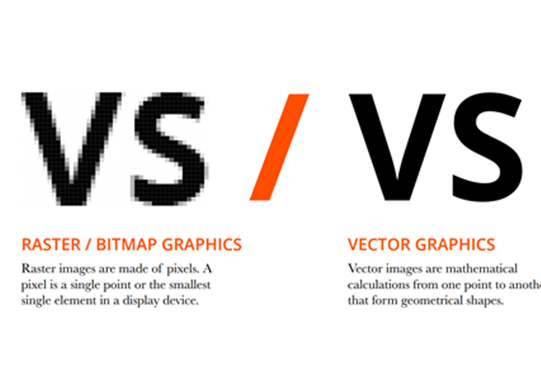

In computer graphics, a raster graphics or bitmap image is a dot matrix data structure that represents a generally rectangular grid of pixels, viewable via a monitor, paper, or other display medium. Raster images are stored in image files with varying formats.
Vector graphics are computer graphics images that are defined in terms of points on a Cartesian plane, which are connected by lines and curves to form polygons and other shapes.
Inkscape is a Free and open source vector graphics editor for GNU/Linux, Windows and MacOS X. It offers a rich set of features and is widely used for both artistic and technical illustrations such as cartoons, clip art, logos, typography, diagramming and flowcharting. It uses vector graphics to allow for sharp printouts and renderings at unlimited resolution and is not bound to a fixed number of pixels like raster graphics. Inkscape uses the standardized SVG file format as its main format, which is supported by many other applications including web browsers. It can import and export various file formats, including SVG, AI, EPS, PDF, PS and PNG. It has a comprehensive feature set, a simple interface, multi-lingual support and is designed to be extensible; users can customize Inkscape's functionality with add-ons. You can click on the link below for tutorials on Inkscape!

As you can see above, it is a bitmap of "Mario". Now i will be tracing the bitmap using Inkscape. To trace the bitmap, you need to click on the tab above named "Path". After moving your cursor on it, the tab should drop down on show you a variety of options. Simply click on the "Trace Bitmap" option and a pop-up will appear. Alternatively, you can hold Shift + Alt + B to access this function.

Your screen should like this. Now the trace bitmap option has multiple options and functions but i will just be doing the brightness cutoff here. After selecting the desired digits for the brightness threshold (Instead of clicking "OK" immediately to view the results, you can click on update to preview how the completed bitmap would look like. The snapshot below shows my completed bitmap image. Now remember, Inkscape is not just limited to the function to trace bitmaps but has other amazing features such as drawing and etc. Have fun exploring!


GIMP is a free and open-source raster graphics editor used for image manipulation and image editing, free-form drawing, transcoding between different image file formats, and more specialized tasks. With GIMP, you can manipulate and change the images you have, as long as it is in the required format (JPG, TIF, BMP, GIF for Raster and DXF, EPS, SVG, AI, PDF for Vector) You can click on the link below for tutorials on GIMP!

What you can see above is a snapshot on the application GIMP. The first picture shows the original image of a "Quokka" in its original format and form. Notice that the the image is in a very large size and resolution.

Then in the second picture, you can observe that i am attempting to resize the picture. This function can be useful when you are trying to upload a picture to your website and you are unsure if it is too big or too small. This function allows you to manipulate and test out the suitable size for the picture. After playing around with the different sizes, the third picture below is the selected resized of the picture. This one of the useful functions that GIMP provides you with so feel free to explore!

Fusion 360 is a great application to help you create your own 3d shapes and designs! With Fusion 360, it can help you to develop your own product and creation! It can be a lamp, a radio, a table, a gadget, a mechanism and many more. Fusion 360 has many useful functions that is useful when you are creating objects that come together. Take hinges for example, once you have designed and created the two parts of the hinge, Fusion 360 can help you to assemble them together and you can observe firsthand how you want the object to orientate! This is only one of the hundreds and thousands of wonders you can create with this application. The example of the hinge mechanism can be seen below. You can click on the link below for tutorials on Fusion 360!

As you can see above, i have selected a picture of a chess to turn it into a 3D model. On the top right, under the option of "Solid", there are multiple functions you can choose from. Since i want to start tracing this chess piece, i would select the "Create" function.

After completing the sketch of the Chess piece, it is time to turn it into a three dimensional model. Under the "Solid" option again, click on the "Revolve" function. this function will help you turn it into a 3d model. How it does this, is that this feature selects the sketch you have created and revolves it by 360 degrees along the axis, turning your sketch into a full 3d model.

As you can see above the, there is a pop-up on the right after clicking on the "Revolve" function. The first two option, "Profile" and "Axis" is what you have to pay attention to. The profile is the sketch of the edges and the plane of the chess piece while the axis is the line that the profile will revolve around. Click on "Axis" and select the height. Click on "Profile" and select the plane. Make sure the options below are set to "Angle", "One Side" and "New Body" (You can change this later on if you want to experiment the different functions). Hit "OK" and the completed 3D model should appear. You can observe the completed chess piece below. These are just a few of the amazing functions of Fusion 360, so have fun exploring!

Tinkercad is a free, online 3D modeling program that runs in a web browser, known for its simplicity and ease of use. Since it became available in 2011 it has become a popular platform for creating models for 3D printing as well as an entry-level introduction to constructive solid geometry in schools. It is an easier alternative to Fusion 360!

As you can see above, the options are pretty basic shapes and sizes and not as advanced as Fusion 360.